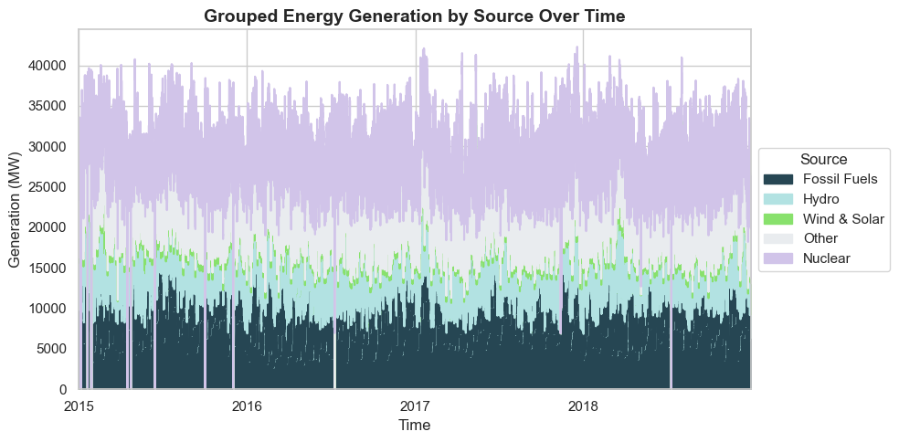
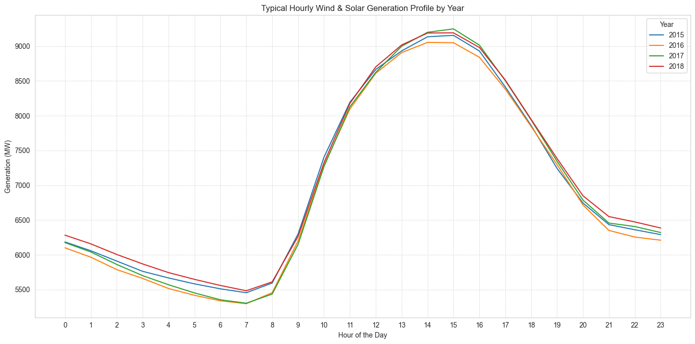
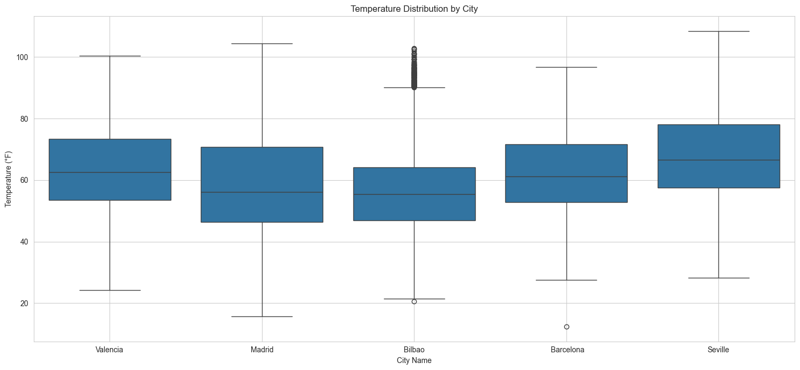
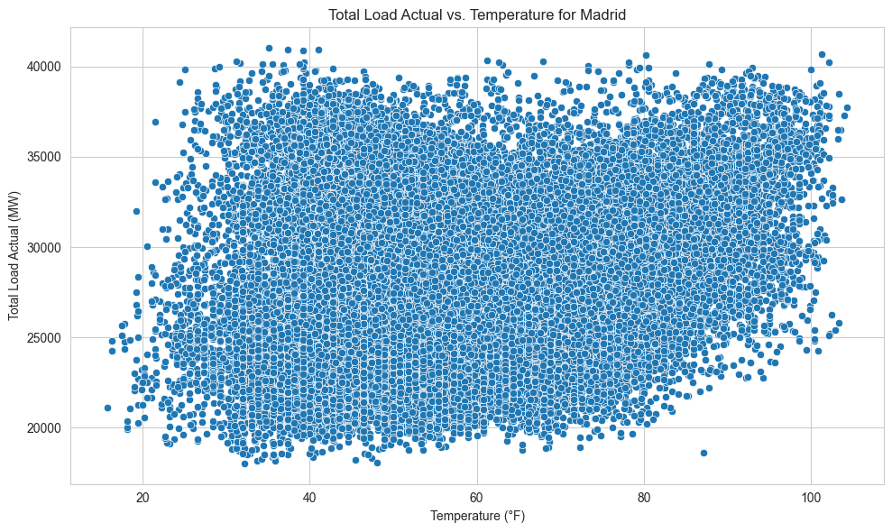
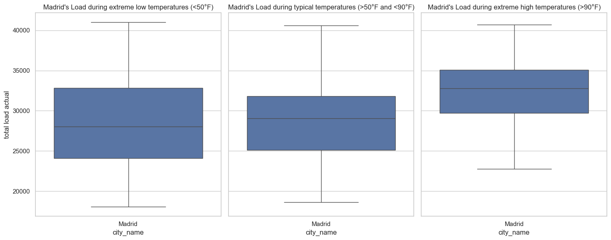
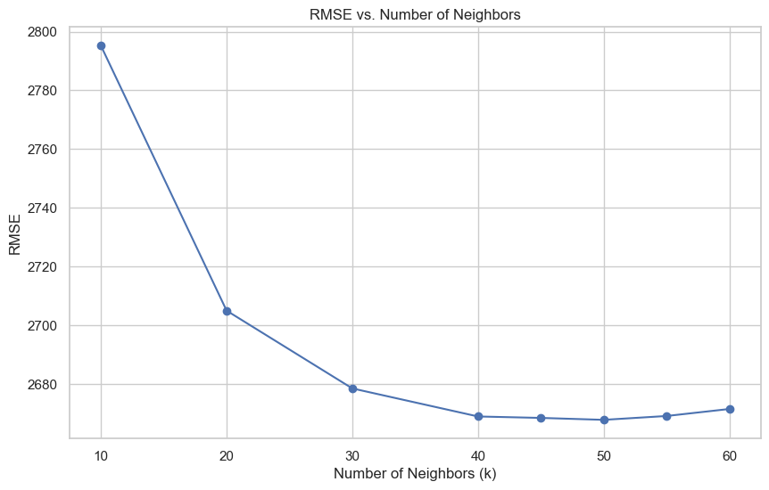
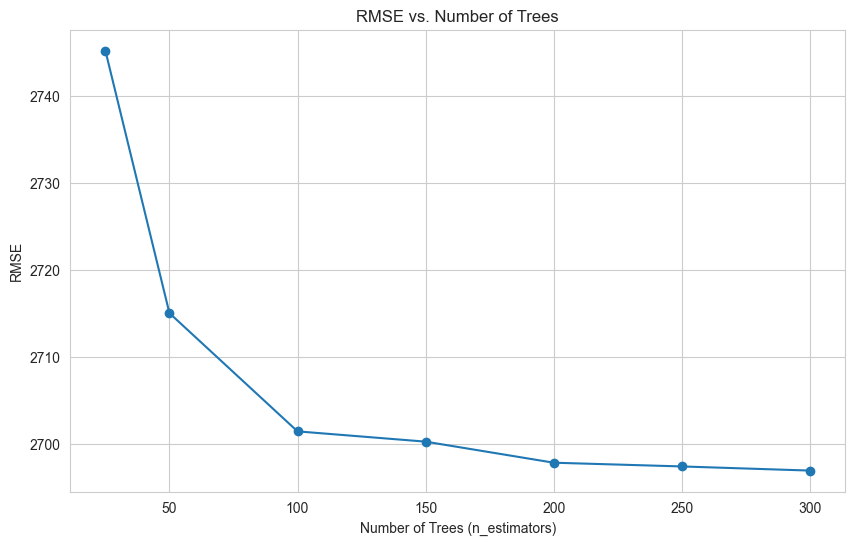
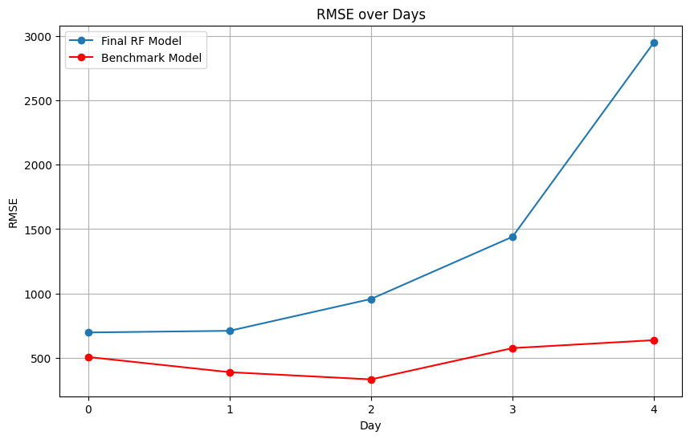

Time-Series Forecasting of the Spanish Energy Grid
October 2023
Intro & Motivation
My goal with this exercise was to work on my time-series forecasting skills. Particularly, I wanted to see if I could develop both a k-Nearest Neighbors (KNN) model and a Random Forest (RF) model to predict the load value on the grid at a particular point in time.
The data I had included the actual load value as well as the Spanish Transmission System Operator (TSO) best-in-class forecasted values. My objective was to compare both my KNN and my RF model against actual and benchmarked TSO forecasts.
Background
When it comes to time-series forecasting in the energy space, models like KNN, RF, Autoregressive Integrated Moving Average (ARIMA), Seasonal ARIMA (SARIMA), Prophet, Long Short-Term Memory Networks (LSTMs) and XGBoost are common. However, KNN and RF are simpler and more lightweight than these other models, and thus a good place to start.
KNN is a highly adaptable, lightweight model which adapts swiftly to new data patterns. RF on the other hand can be great for handling multiple features and also can give us a sense of the feature importance. When using a RF model, we can pinpoint the critical drivers of the energy load by using the feature importance output, and this can be a helpful tool in itself.
Data Used
Data generally from this Kaggle project.
This dataset contains 4 years of electrical consumption, generation, pricing, and weather data for Spain. Consumption and generation data was retrieved from ENTSOE - a public portal for Transmission Service Operator (TSO) data. Settlement prices were obtained from the Spanish TSO Red Electric España. Weather data was purchased from the Open Weather API for the 5 largest cities in Spain and made public.
Spanish Energy Data
| Data was in hourly timestamps and spanned from 2015-2019 |
| Energy sources (MW) were provided and broken down by category, which I have grouped for simplicity: |
|
| Other data streams included: |
|
Spanish Weather Data
| Data for 5 Spanish cities (Valencia, Madrid, Bilbao, Barcelona, Seville) was provided in hourly timestamps and spanned from 2015-2019 |
Data streams included:
|
Exploratory Data Analysis Insights
Of all the steps to create a forecasting model, exploring the data took a large chunk of time. Particularly this was the case because some things that were uncovered in the exploratory data analysis (EDA) phase needed to be addressed in the data cleaning/pre-processing phase, which led to a bit of an iterative process. Rather than go over every single thing I analyzed (which you can see in the energy-data-lab repo), I will highlight some of the conclusions.
Data Inspection. Several columns in the energy data were zero or missing throughout, meaning these columns could be dropped. Outside of those columns, the scale of the values varied a lot, meaning normalizing or scaling the data would be important in the feature matrix. Likewise, the scale of the values in the weather data fluctuated a lot, indicating normalizing/scaling the data here will be necessary too. Thankfully, there are very few missing observations in the energy data and no missing data in the weather set. However, there are some thorny duplicate timestamps in the weather data set that will need addressing.
Patterns in Energy Generation Over Time. Looking at the above makeup of the Spanish energy grid over time, it appears that wind and solar make up a relatively small portion overall, though upon closer inspection I found that there were occasional summer days where wind and solar made up ~50% of the grid makeup. Generally, fossil fuels make up approximately 25% of the grid, nuclear almost half ot the energy grid, and hydro, biomass, and waste are smaller but important components to the grid makeup. There are definite seasonal trends, but no clear general upwards or downwards trend in generation over time.
In the above graph, the shape of the wind and solar generated on a typical day is clear. As expected, wind and solar generation peaks around the middle of the day, when the sun (and thus, solar output and windspeed) is at it's peak. Whereas a purely solar profile would approach zero through the dark hours of the evening, the presence of wind power means that there is still some renewable generation throughout that period. Based on my understanding of the energy grid and further concluded by other investigations, given this classic renewable generation shape, fossil fuel generation will appear "duck-curve" shaped. Nuclear power generation tends to be constant, due to the long ramp-up and ramp-down speeds required for nuclear power. Interestingly, the above shows that wind and solar generation did not appear to dramatically increase year-over-year, as I had expected, since renewables became cheaper to make and install. Of the two, I further investigated to find that onshore wind generation is the larger portion.
While this analysis on the energy generation sources was interesting, I did not find it to be particularly relevant for predicting the grid load. To confirm this, I briefly played with including the previous day generation sources to the feature matrix, but found it actually worsened my models. So, I ultimately did not include these variables in the feature matrix.
Temporal Analysis. I found some seasonality to the energy data. There is a bit of a duck curve shape across the year -- for example, the total load peaks in June, July and August, and again in January/February. This makes sense when you consider the weather is probably most extreme in these months, requiring additional load for heating or cooling. The global annual peak sometimes occurs in sometimes June, sometimes July, and sometimes February. Weekday load is generally higher than weekend load, with median weekday load around 30,000 MW and median weekend load around 27,000 MW. There are some outliers in the weekend load that were higher than typically expected.
Temperature Distribution Across Cities. Seville tends to have warmer weather than the other cities and Bilbao tends to have cooler weather than the other cities, though Madrid is very similar. Madrid's weather appears to have more of a spread than Bilbao. Overall, the weather is typically pleasant across all the cities, with most hours hovering between 50-78°F depending on the city. All the cities have had some extreme weather events -- times where the temperature exceeded 100°F, and occasionally times where the temperature approached freezing. Madrid saw days where temperature dropped well below freezing. Madrid had the widest range of values. 
Correlation Analysis: Load vs. Weather. The above chart is an example of the total grid load versus the temperature for the city of Madrid. All five cities studied showed a similar pattern: there is a clear upward trend. As temperature increases, total load increases. However, there appears to also be something interesting at the lower end too: as temperature gets low, total load is occasionally higher. I explored this further in the below box plot. Clearly, the higher temperatures (here defined as >90°F) had higher loads. For a clear linear trend, these charts would appear linear too. However, instead we see that at lower temperatures (here defined as <50°F), some load data points were higher than typical temperature load data points. The median load of the lower temperature data was lower than the median load of the typical temperature data, but, the spread of the lower temperature data was wider, and a significant number of extremely cold hours actually had a greater load than the typical temperature hours. This was an interesting finding, and something I wanted to include into my feature matrix.
Feature Matrix Selection
Of course, there were several iterations of feature matrices that I played with. However, given the results of the EDA as well as my domain knowledge, I had an intuition that the following features would be good starting points and I stuck to them more or less. All values in the feature matrix are scaled, either between 0 and 1, or using a standard scalar, meaning they have a mean of 0 and a standard deviation of +/- 1. Standardly scaled features could be larger or smaller than +/- 1 for values that were larger than 1 standard deviation outside of the mean and typically went to around +/-3. For KNN, scaling is critical as it is a distance-based model. For RF, scaling is less relevant but can still be used. Thus the features included:
- Temperature (°F) for each city, scaled with a standard scalar
- Temperature extreme cold binary, where 1 represents extremely cold temperatures less than a cutoff (for example, 32°F, though I played with this value)
- Temperature extreme hot binary, where 1 represents extremely hot temperatures more than a cutoff (for example, 90°F, though I played with this value)
- Day type binary, with 0 for weekend, 1 for weekday
- Season, derived from the month, one-hot encoded as true/false for each season
- Hour of the day, transformed using both sin(2pi*x) and cos(2pi*x) to indicate the cyclical nature of the hour feature
- Previous day load, scaled with a standard scalar
- Spanish holiday binary, where 1 represents a holiday (such as Christmas on 12/25) and 0 represents no holiday
Results
For both KNN and RF models, I had to impose a train-test split that accommodates the sequential nature of time series forecasting. A typical train-test split could impose data leakage, where future time stamps are being used to predict the future. Thus, it was imperative that the training and testing split happen at least chronologically (note that an expanding or rolling window could have been used here too). I used the first 80% of values in the feature matrix for training, and the last 20% of values for testing. Then, I used a time series cross validation on the training data with 5 splits. The goal was to see how well the model performs on unseen data by evaluating it against different folds of the training set. Once hyperparameter tuning was completed across the various folds of the training set, I would then evaluate the model's effectiveness against the testing set.
For regression models like these, evaluating the model's effectiveness with metrics like root mean squared error (RMSE) and the mean absolute error (MAE) will work well. Additionally, I can compare my model's predictions against the best-in-class TSO predictions as a benchmark. These metrics and comparisons will help me understand which hyperparameters, features, and ultimately, which model, predicts the best.
K-Nearest Neighbors (KNN)
 With KNN, the only real hyperparameter to play with is the number of neighbors (k). The above graph shows the root mean squared error (RMSE) plotted against the number of neighbors (k) across all five cross validation folds. As can be seen in the above graph, around k=50 the RMSE plateaus, suggesting that increasing k further will not significantly improve the model's performance. Thus, from here I calculate the final mean absolute error (MAE) and RMSE of our KNN model using k=50 against the test set. I can then similarly calculate the RMSE for the benchmark. Thus, the final numbers for my KNN model are:- My KNN Model RMSE: 2538.92 MW
- Benchmark RMSE: 378.28 MW
- My kNN model's RMSE is around 8.84% of the mean load value.
- The benchmark's RMSE is around 1.32% of the mean load value.
Overall, while my KNN model could certainly be improved upon, it seems to capture the overall trend and shape of the load effectively. However, it struggles with the magnitude, generally underpredicting (though occasionally overpredicting) the peak load values.
Random Forest (RF)
With RF, there are several hyperparameters you can tune. To start, I looked into the number of trees. The above graph shows the root mean squared error (RMSE) plotted against the number of trees (n_estimators) across all five cross validation folds for one iteration of my RF model. As can be seen in the above graph, around n_estimators = 200 to 250 the RMSE plateaus, suggesting that increasing the number of trees further will not significantly improve the model's performance. From here, I then evaluated two other hyperparameters -- maximum depth of the trees and maximum number of features to include -- to further improve the performance of the RF model. After hyperparameter tuning, I determined the best model had 250 trees with a maximum depth of 10 and maximum number of features of 5. The max depth parameter controls the maximum number of levels in each decision tree; limiting depth can prevent overfitting by reducing the complexity of the model. Conversely, too shallow trees might not capture sufficient complexity, leading to underfitting. The max features parameter determines how many features each tree is allowed to try to split on at each node, and setting this can help ensure that trees in the ensemble are diverse, which often improves model performance due to the ensemble capturing a wider array of patterns in the data.
Next, I can calculate the final RMSE of our RF model using 250 trees of maximum depth of 10 and 5 features against the test set. I can then similarly calculate the RMSE for the benchmark. Thus, the final numbers for my RF model are:
- My RF Model RMSE: 2452.98 MW
- Benchmark RMSE: 378.28 MW
- My RF model's RMSE is around 8.54% of the mean load value.
- The benchmark's RMSE is around 1.32% of the mean load value.
Upon visual inspection of the RF model's predictions, it seems to capture the overall trend and shape of the load effectively. However, it struggles with the magnitude, both underpredicting and sometimes overpredicting the peak load values, similar to the KNN model. It is also a bit more "jaggedy" than it needs to be at times. Additionally, both the KNN and RF models tend to over- and under-predict at similar points in time, which is interesting. I explored the under- and over-predicting tendency further, and found that at the higher load values, my model underpredicts, but that at lower load values, my model overpredicts.
I found that on the first day of prediction (day 0), my model has a much smaller error -- the error for that day is only 2.43% of the mean load value, or 697 MW. This suggests that my model might do a better job at predicting the grid load over a 24 hour horizon. The below chart shows how error increased from day 0 through day 4 in my model compared to the benchmark's model. However, I did also note that this trend does not continue after day 4 -- and in fact, the error fluctuates dramatically after day 4 -- indicating that further studies would need to be conducted to see if indeed my model better predicts over 24 hour horizons versus longer duration horizons.
Finally, when investigating the residual between my RF model and the actual load data, I found that the largest errors happened on a very peculiar day, June 2, 2018. In fact, 12 of the 20 "worst" predictions occured on this day. Upon further research, I found that Pedro Sanchez was sworn into office as the Prime Minister of Spain on this day (he is still the PM of Spain as of this writing). On June 2, 2018, the grid load peaked at around 40,000 MW, which is significantly higher than a the mean and median of the grid load, which are 28,000 MW. My model significantly underpredicts the load that day, and frankly, the impact of a new PM on the grid could not have been appropriately anticipated. This is a fascinating finding, but also one that I could not have expected my model to capture.
Conclusions
In conclusion, my RF model achieves an RMSE of 2452.98 MW, which is about 8.54% of the mean load value, indicating a reasonably good fit to the load pattern despite not being flawless. Compared to the KNN model, the RF model is more accurate by 86 MW, or 0.3% of the mean load. A notable observation is the performance on June 2, 2018, when a significant deviation occurred due to the unforeseen event of a new Prime Minister being sworn in, underscoring the model's limitations in accounting for such events. On the other hand, the KNN model, while slightly less accurate with an RMSE of 2538.92 MW, offers a faster alternative, suitable for scenarios where speed is of the essence.
As for future improvements, exploring a suite of sophisticated time-series forecasting methods like ARIMA, SARIMA, Prophet, LSTMs, or XGBoost stands as the logical next step, aiming to inch closer to the benchmark RMSE of 378.28 MW, which only represents about 1.32% of the mean load value. Fine-tuning the feature matrix could also unlock further potential; for instance, tweaking the previous day's load scaling or incorporating predictive scheduling elements like future election dates may provide additional predictive leverage. Finally, studying different time horizons could prove to be an interesting approach for understanding how the model performs best.
Overall, I am content with my model's performance. However, the journey towards optimization is an ongoing process, and with more time dedicated to testing and iteration, I am optimistic that an even more precise model is within reach.